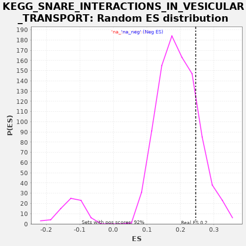

| | | Dataset | drug_embeddings_gsea |
| Phenotype | NoPhenotypeAvailable |
| Upregulated in class | na_pos |
| GeneSet | KEGG_SNARE_INTERACTIONS_IN_VESICULAR_TRANSPORT |
| Enrichment Score (ES) | 0.24549326 |
| Normalized Enrichment Score (NES) | 1.2705115 |
| Nominal p-value | 0.18939394 |
| FDR q-value | 0.7318093 |
| FWER p-Value | 1.0 |
Table: GSEA Results Summary
 Fig 1: Enrichment plot: KEGG_SNARE_INTERACTIONS_IN_VESICULAR_TRANSPORT
Fig 1: Enrichment plot: KEGG_SNARE_INTERACTIONS_IN_VESICULAR_TRANSPORT
Profile of the Running ES Score & Positions of GeneSet Members on the Rank Ordered List
| PROBE | GENE SYMBOL | GENE_TITLE | RANK IN GENE LIST | RANK METRIC SCORE | RUNNING ES | CORE ENRICHMENT | | 1 | GOSR2 | | | 366 | 1.000 | 0.0092 | Yes |
| 2 | STX10 | | | 697 | 1.000 | 0.0208 | Yes |
| 3 | BET1L | | | 1143 | 1.000 | 0.0246 | Yes |
| 4 | BET1 | | | 2038 | 1.000 | -0.0023 | Yes |
| 5 | STX19 | | | 2527 | 1.000 | -0.0014 | Yes |
| 6 | GOSR1 | | | 2899 | 1.000 | 0.0074 | Yes |
| 7 | STX16 | | | 4839 | 0.898 | -0.0942 | Yes |
| 8 | VAMP1 | | | 5271 | 0.876 | -0.0937 | Yes |
| 9 | STX2 | | | 5655 | 0.856 | -0.0906 | Yes |
| 10 | STX6 | | | 5682 | 0.855 | -0.0632 | Yes |
| 11 | VAMP5 | | | 5748 | 0.852 | -0.0386 | Yes |
| 12 | SNAP47 | | | 5786 | 0.849 | -0.0121 | Yes |
| 13 | SNAP23 | | | 5939 | 0.844 | 0.0063 | Yes |
| 14 | STX11 | | | 6009 | 0.839 | 0.0302 | Yes |
| 15 | VTI1A | | | 6090 | 0.836 | 0.0533 | Yes |
| 16 | STX5 | | | 6266 | 0.827 | 0.0696 | Yes |
| 17 | VAMP8 | | | 6381 | 0.822 | 0.0899 | Yes |
| 18 | STX8 | | | 6405 | 0.820 | 0.1163 | Yes |
| 19 | STX18 | | | 6449 | 0.818 | 0.1413 | Yes |
| 20 | STX1B | | | 6801 | 0.801 | 0.1446 | Yes |
| 21 | BNIP1 | | | 6900 | 0.795 | 0.1651 | Yes |
| 22 | VTI1B | | | 6997 | 0.790 | 0.1855 | Yes |
| 23 | SNAP29 | | | 7033 | 0.788 | 0.2100 | Yes |
| 24 | VAMP4 | | | 7244 | 0.776 | 0.2222 | Yes |
| 25 | TSNARE1 | | | 7298 | 0.774 | 0.2450 | Yes |
| 26 | SNAP25 | | | 7668 | 0.753 | 0.2455 | Yes |
| 27 | VAMP7 | | | 8399 | 0.711 | 0.2200 | No |
| 28 | STX4 | | | 8646 | 0.697 | 0.2270 | No |
| 29 | USE1 | | | 9053 | 0.673 | 0.2223 | No |
| 30 | STX12 | | | 9209 | 0.664 | 0.2343 | No |
| 31 | VAMP3 | | | 9698 | 0.632 | 0.2226 | No |
| 32 | STX7 | | | 9900 | 0.618 | 0.2300 | No |
| 33 | STX1A | | | 10118 | 0.601 | 0.2357 | No |
| 34 | VAMP2 | | | 10328 | 0.591 | 0.2416 | No |
| 35 | STX3 | | | 11703 | 0.566 | 0.1673 | No |
| 36 | YKT6 | | | 11932 | 0.561 | 0.1709 | No |
| 37 | STX17 | | | 13278 | 0.519 | 0.0968 | No |
Table: GSEA details [plain text format]

Fig 2: KEGG_SNARE_INTERACTIONS_IN_VESICULAR_TRANSPORT: Random ES distribution
Gene set null distribution of ES for KEGG_SNARE_INTERACTIONS_IN_VESICULAR_TRANSPORT